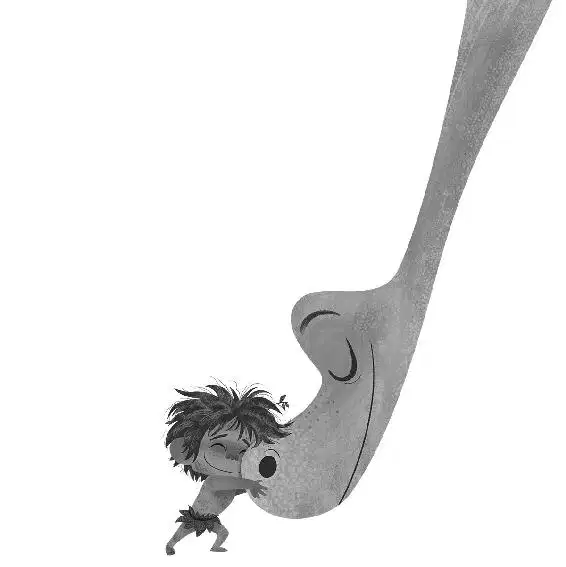

The big clear sky was bright blue as Arlo walked the last part of his journey alone. This time, he walked through the familiar mountain pass without fear. Regardless of whether or not the wilderness chose to hit him with another storm, he knew he would soon be home. He would make it.
Beyond the mountain pass, Arlo saw the farm. The fields were dying and there were piles of harvest that had not yet been stored. Then he saw the silo: four stone footprints, high and proud.
In the distance, Momma, Buck, and Libby were working in the fields. Even from far away, Arlo could see that they were so tired.
Momma paused from her work and saw a strong, confident dinosaur walking toward the farm. “Henry?” she said, confused.
As Arlo stepped out into the light, Momma’s face lit up. “Arlo!” she shouted, running toward him. “ARLO!”
She hugged her son as Buck and Libby ran in from the fields. The family embraced, crying tears of joy. Arlo was finally home.
“Where have you been?” Momma cried. She took a step back and looked astonishingly at her son. She literally couldn’t believe her eyes.
“I took care of that critter,” Arlo answered. And he had... in the way that only Arlo could.
